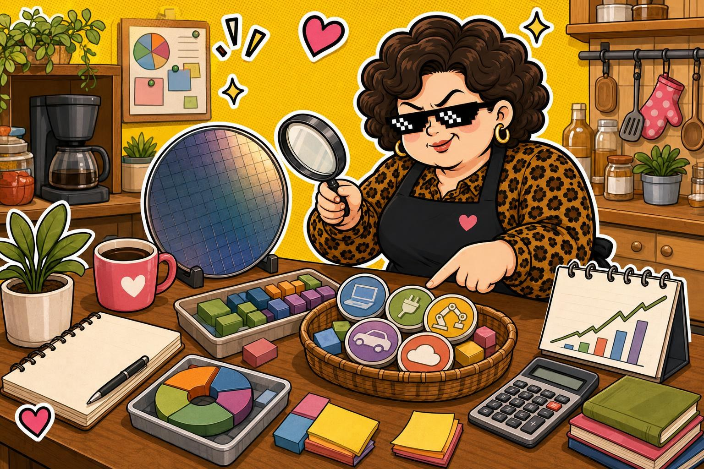

產業輪動觀察 · 2026-06-21
光鼎：題材輪到這桌，先看有沒有基本面撐腰
6226 光鼎 今天收在 12.40，漲跌 0.00。它被選進今日觀察，不是叫你追熱鬧，而是因為價格相對可負擔，又有 產業輪動 可以做功課。
阿姨一句話：名單可以放口袋，功課不能放冰箱。
收盤價12.40
漲跌▲ 0.00
觀察分類產業輪動觀察
今天這齣在演什麼
光鼎 不是那種大家每天喊到耳朵長繭的高價權值股。阿姨把它放進口袋名單，是因為它比較接近一般人能做功課的價格帶，也能拿來觀察產業輪動和資金是不是換桌吃飯。
光鼎 的題材要回到產業位置、價格帶、成交量和近期市場情緒一起看。阿姨不把單日漲跌當答案，只把它當成提醒：今天市場有話想說，但你要慢慢聽，不要被音量牽著走。
為什麼值得注意
光鼎 收盤價 12.40，比高價權值股更容易被小資族納入口袋名單；今天漲跌幅約 +0.00%，可用來觀察 產業輪動 的節奏。
可以觀察的機會在於：如果低中價位背後有營收、訂單、產業輪動或政策題材支撐，後續才有比較完整的故事；如果只是短線資金換桌，熱鬧散場時也會很快。
阿姨看點
- 價格帶：先確認這是不是一般人能負擔、也能分批做功課的價格區間。
- 題材背景：光鼎 的題材要回到產業位置、價格帶、成交量和近期市場情緒一起看。阿姨不把單日漲跌當答案，只把它當成提醒：今天市場有話想說，但你要慢慢聽，不要被音量牽著走。
- 風險節奏：低中價位也可能波動很大，題材輪動退潮時要特別小心。
阿姨看風險
- 風險等級：中高
- 適合觀察：想找價格較可負擔、願意做題材與風險功課的觀察者。
- 不適合：想找保證答案、不能接受波動，或沒有時間做功課的人。
⚠️ 阿姨的風險提醒（你一定要看）
📌 本站所有股票 ETF 內容僅供教育與資訊參考，不是投資建議，不保證任何收益。
📌 所有數字與範例皆為靜態展示資料，未串接即時市場數據，請勿以此做為買賣依據。
📌 任何投資都有風險，包括本金損失的可能。投資前請自行做功課、評估財務狀況，必要時諮詢專業顧問。